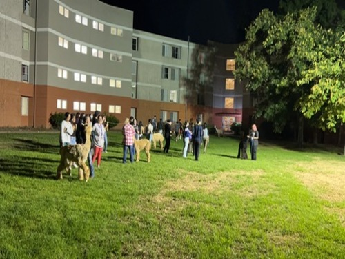
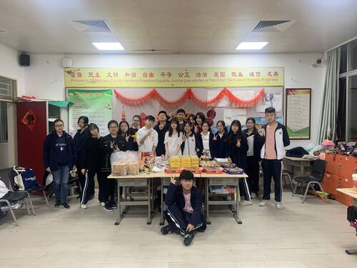
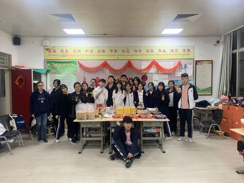

XINYI XU
My real name is Xu Xinyi and my English name is Alison. I am female (both physical and psychological). I was born in Shenzhen, Guangdong Province, China, where I received all school education, such as junior high school and senior high school, except university. Before high school, I followed the same educational trajectory as most of the kids around me at the same age. Our ultimate goal was to get a good score in the "gaokao" (college entrance test). The junior high school I study in is a very top-ranked key junior high school in our local area, which is similar to the score of the American education system. The junior high school was similar to a 5 star school and I learned all the basics of the subjects I needed for my future.
After graduating from junior high school, although I was admitted to a local high school with the same education system, I finally decided to give up the opportunity to study in a "Chinese-style" high school and go to an international high school to receive my three-year high school education. During my high school years, I chose to study art and prepared for my future application to professional art schools for two years. During these two years, I completed the collection of works in my field of study, prepared for language test results and learned AP art history. AP art history has enriched my understanding of world art and served as the theoretical basis for my art projects.
Last year, I finished my high school study. In the application season, I applied for not only art colleges but also comprehensive universities such as UC. In the end, although I got many offers from professional art colleges, I still chose to study business in a comprehensive university. My decision is to combine various aspects such as future employment prospects, campus resources and so on. Now I am a freshman majoring in PRE-Business at UCR. After completing my pre-major requirements, I will enter the business school to complete the undergraduate study of business administration and finally obtain the Bachelor of Science in Business Administration 3 years later.
Experience
Residence Assistant
• Help students living in dormitories to solve problems and assist campus staff.
Organization planner
• Write plans for related activities
• Organize activities
• Maintain order at the event site
Education
UC Riverside
Portfolio



© XINYI XU
